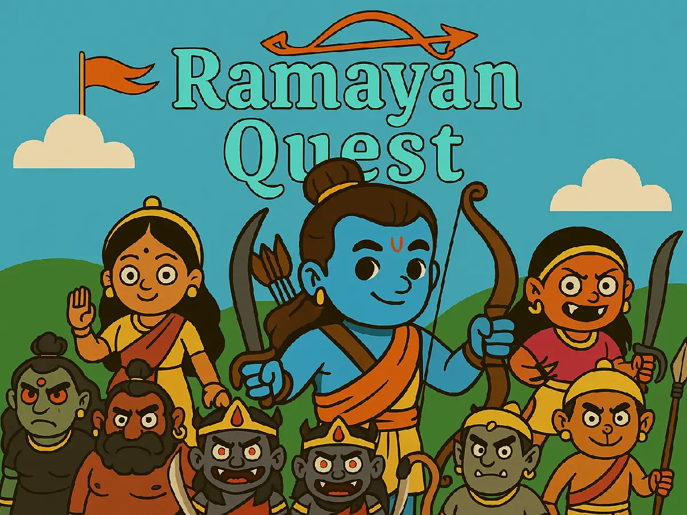

What is Ramayan Quest?
A mythology-inspired quiz and story adventure based on the Ramayana, developed and published by Gamemithra Studios.

Ramayan Quest FAQ
These answers describe only what is currently confirmed on the website and in the repository.
Ramayan Quest answers
A mythology-inspired quiz and story adventure based on the Ramayana, developed and published by Gamemithra Studios.
Yes, it is positioned as family-friendly for younger players, families, students and culturally curious players.
Yes. The format supports shared discovery and conversation about Indian stories.
They can encounter Ramayana characters, stories, values, places and cultural vocabulary.
The supported language list is not confirmed in the repository yet.
It supports learning through quizzes and storytelling, but formal educational accreditation is not claimed.